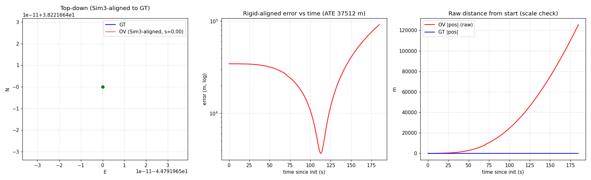
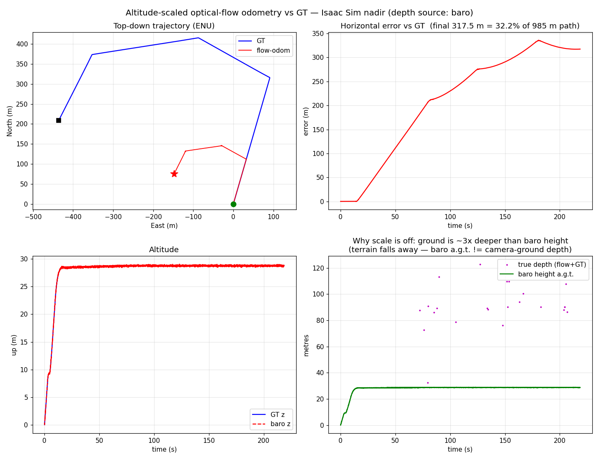
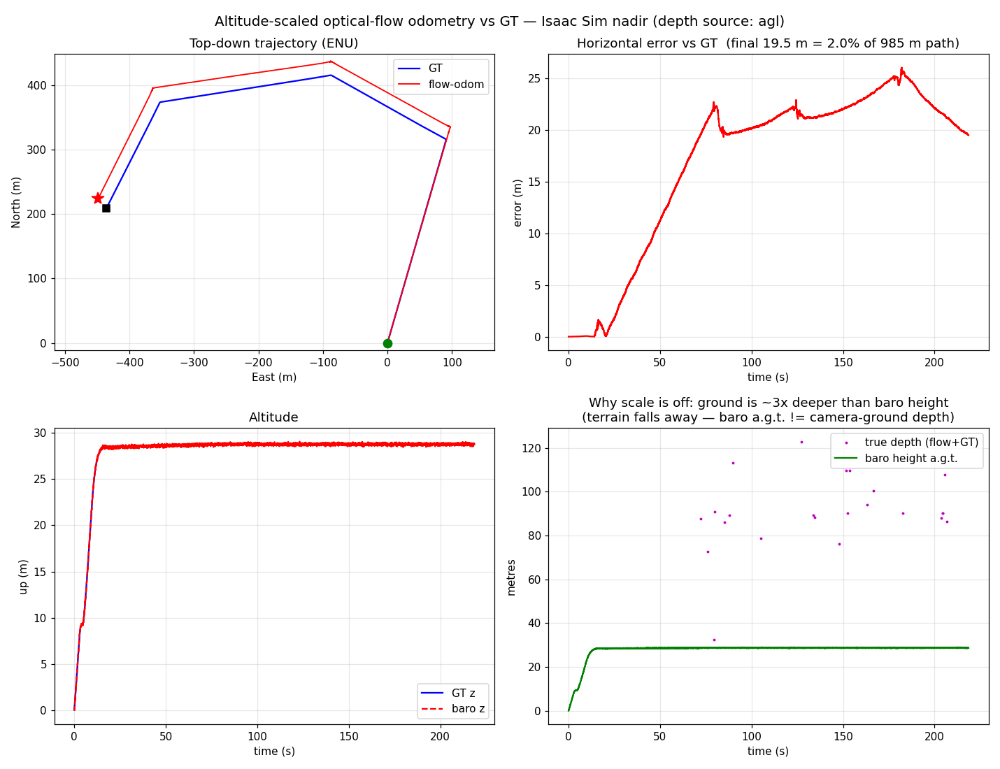
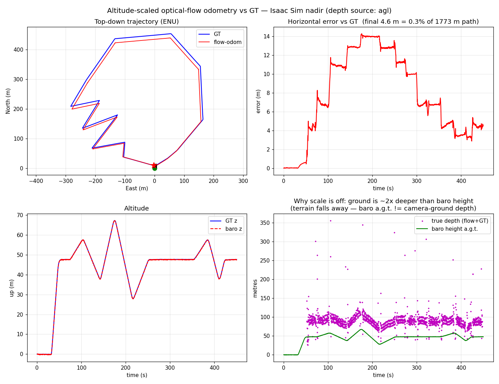

Everything on this page is measured on a single Isaac Sim flight: isaac-sim-20260624_2337. No GPS, no map, no rangefinder — nadir camera + IMU only.
| Resolution | 960 × 600 px |
| Frame rate | 31.2 Hz → 14 070 frames |
| FOV | 110° H · 83.5° V |
| Focal length | fx = fy = 336.1 px |
| Principal point | cx=480, cy=300 |
| Distortion | Zero (ideal pinhole) |
| Mount | Rigid nadir, extrinsic constant |
| IMU rate | 250 Hz · FRD body frame · 112 572 samples |
| Accel units | m/s² (SI, not g) |
| Flight duration | 450 s = 7.5 min |
| Ground path (GT) | 1833 m |
| Baro AGL range | 0 – 67 m · median 47 m |
| World frame | ENU (East-North-Up), takeoff = origin |
| Terrain | Cesium global DEM — valley relief |
What makes this dataset hard: the Cesium terrain under the flight path drops into a valley. The drone's barometer measures altitude above the takeoff pressure level (≈ 17–67 m), but the actual camera-to-ground depth is 50–400 m because the terrain descends. Any algorithm that assumes baro = camera-to-ground distance will underestimate velocity by up to 6×.
We first tried monocular VIO (OpenVINS MSCKF, KLT front-end). It works fine at low altitude, then catastrophically diverges. Understanding exactly why motivates flow-odom.
OpenVINS recovers metric scale by triangulating features over multiple frames. The wider the baseline relative to the feature depth, the stronger the scale signal. At 50 m altitude over flat ground with a nadir camera, the drone is moving ~0.5 m/frame — the angular parallax is 0.5/50 = 10 mrad = 3.4 px. The IMU accelerometer adds noise at this level. Scale becomes geometrically unobservable.
OpenVINS dynamic init fires only when feature disparity exceeds init_max_disparity. The config had 80.0 px — the smooth take-off never reached 80 px disparity, so the filter never initialized. Fix: lowered to 1.5 px. Init now fires early in the climb. But scale still diverges above ~20 m — this is an observability limit, not a bug.

The flow-odom insight: the nadir camera over flat-ish ground doesn't need parallax for scale. If you know how far away the ground is (altitude), you know the velocity directly from the image motion. Scale comes from height — not from the accelerometer. This sidesteps the observability problem entirely.
Per consecutive camera pair (frame i−stride → frame i). Runs entirely on the nadir camera + IMU. Nothing uses GPS or map data.
Detect up to 600 Shi-Tomasi corners in the current frame (goodFeaturesToTrack, quality 0.01, min distance 8 px). Track into the next frame with a 3-level image pyramid and 21×21 window LK (calcOpticalFlowPyrLK). Then run a forward-backward consistency check: re-track from t₁ back to t₀ and discard any feature whose reprojection error exceeds 1 px. On this flight ~400–550 features survive per step at stride 5.
Divide by K (fx=fy=336.1, cx=480, cy=300) to get unit-focal-length rays: n = K⁻¹ · [u, v, 1]ᵀ. The Isaac Sim camera has zero distortion so no undistortion is needed. Normalized coordinates make the flow equations independent of focal length — critical for depth recovery.
The IMU gives the relative rotation Rc1c0 between the two camera frames. Project each normalized ray n₀ into frame t₁ as if the camera had only rotated (point at infinity): pr = R_c1c0 · n₀ / (R_c1c0 · n₀)_z. Subtract from the actual tracked position: (du, dv) = n₁ − pr. This is pure translational flow. Without this, a 1° attitude change at 47 m altitude generates ~6 px of false velocity signal — 35× larger than the real translational flow at stride 1.
Project the normalized ray n₀ into the world frame: d_world = R_wc0 · n₀. The ground plane is at z=0, camera at height h (AGL). Solving the ray-ground intersection: h + λ · d_world_z = 0 → Z = λ = −h / d_world_z. Features at steeper off-nadir angles (larger x, y) see deeper ground and get a larger Z, which correctly scales their smaller pixel displacement back to the right velocity. Features with Z ≤ 0 or Z > 50h are rejected.
Each feature contributes two rows: Z·du = −tx + x·tz and Z·dv = −ty + y·tz. With ~450 features → 900 equations, 3 unknowns (tx, ty, tz). Solved with np.linalg.lstsq. Then one IRLS reweight pass: compute per-feature residual, find the median, zero-weight any feature beyond 3× median, re-solve. This robustly suppresses moving objects, mismatches, and foreground clutter without RANSAC iterations.
The solved t_cam is in the camera frame. Rotate to the world (ENU) frame: dC = R_wc0 · t_cam. Accumulate pos_XY += dC[:2]. Altitude Z comes directly from the barometer (height above takeoff pressure level), not from the estimated tz. At the end of the 450 s flight, 14 070 frames are reduced to ⌈14070/stride⌉ integration steps.
# Core loop — one pair, stride s (frame[i-s] → frame[i]) p0 = cv2.goodFeaturesToTrack(prev, maxCorners=600, qualityLevel=0.01, minDistance=8) p1, st, _ = cv2.calcOpticalFlowPyrLK(prev, cur, p0, None, winSize=(21,21), maxLevel=3) # forward-backward check: reject reprojection > 1 px p0b, st2, _ = cv2.calcOpticalFlowPyrLK(cur, prev, p1, None) mask = st & st2 & (np.linalg.norm(p0-p0b, axis=1) < 1.0) A, b = [], [] for (u0,v0),(u1,v1) in zip(p0[mask], p1[mask]): n0 = Kinv @ [u0, v0, 1] # normalize (fx=fy=336.1) pr = R_c1c0 @ n0; pr /= pr[2] # rotation-only predicted position du, dv = (Kinv @ [u1,v1,1])[:2] - pr[:2] # translational flow only dz = (R_wc0 @ n0)[2] # ray z-direction in world Z = -h0 / dz # ray-ground depth (h0 = AGL at frame i-s) A += [[-1, 0, n0[0]], [0, -1, n0[1]]] b += [Z*du, Z*dv] t_cam, *_ = np.linalg.lstsq(A, b) # solve (tx, ty, tz) # IRLS: one reweight — reject features 3× above median residual resid = np.linalg.norm((A @ t_cam - b).reshape(-1,2), axis=1) w = (resid < 3*np.median(resid)).astype(float) t_cam, *_ = np.linalg.lstsq(A * w[:,None], b * w) pos[:2] += (R_wc0 @ t_cam)[:2] # accumulate ENU XY pos[2] = baro_height[i] # altitude from baro directly
The translational optical-flow equation — derived from pinhole projection and a first-order motion approximation valid for this dataset.
A 3D point P = (X, Y, Z)ᵀ in camera frame projects to normalized image point x = (X/Z, Y/Z). This is after dividing by K — focal length is absorbed. The Isaac Sim camera has fx=fy=336.1; after normalization the image plane is at unit depth.
After de-rotating (step 3 removes the rotational component), what remains is a pure camera translation. In the new camera frame the point becomes P′ = P − t = (X−tx, Y−ty, Z−tz). It projects to:
At the median altitude of 47 m, a stride-5 step (dt = 0.16 s) sees tz ≤ 0.05 m — less than 0.1% of Z. The denominator Z(Z−tz) ≈ Z². Substituting X = x·Z:
Each of the ~450 surviving features at stride 5 gives two rows. Stacked into Ax = b:
Isaac Sim validity check: At median AGL = 47 m and cruise speed ~4 m/s, the per-step translation at stride 5 is ~0.65 m → tz/Z ≈ 0.002. The first-order error is 0.2% — well below the ~0.3% flow-SNR noise. The approximation holds throughout the flight.
On this flight, the drone banks and pitches during turns. Without stripping the rotational component first, attitude changes produce large false velocity signals.
At 47 m, a 1° camera tilt generates image motion of roughly:
Δu_rot ≈ f · tan(1°) ≈ 336 × 0.0175 ≈ 5.9 px
At stride 1 (dt=0.032 s, cruise 4 m/s), the translational flow is only 4 × 0.032 / 47 × 336 ≈ 0.9 px. A 1° rotation is a 6× false signal. At stride 1 it's even worse: the drone barely moves but attitude oscillates.
The IMU integrates attitude at 250 Hz — the interval between two camera frames contains 8 IMU samples. Relative rotation R_c1c0 = R_wc1ᵀ · R_wc0 is essentially exact (short-interval gyro noise ≈ 0.01° rms, far below any camera-observable motion).
For each normalized ray n₀, predict where it would appear in frame t₁ under rotation only:
pr = R_c1c0 · n₀ / (R_c1c0 · n₀)_z
du = n₁_x − pr_x ← pure translation
Frame convention fix (Isaac Sim specific): GT attitude quaternions are FLU-in-ENU but the camera extrinsic is specified w.r.t. the FRD IMU body (180° about X). Without the fix the camera optical axis points UP in world rather than DOWN — every Z becomes negative and all features are rejected. Fix: R_body_cam = R_CtoI @ diag([1, −1, −1]). Verified by checking the optical axis direction after applying the correction.
The scale of the velocity estimate is directly proportional to Z. If Z is wrong by a factor of 6, the velocity estimate is wrong by 6. This is the dominant error source on this flight.
Camera at height h above the ground plane. A feature at normalized image coord (x, y) has world-frame ray direction:
Baro measures altitude above the takeoff pressure level (sea-level pressure reference minus takeoff value). On this flight: 17–67 m.
But the Cesium terrain under the flight path descends into a valley. The actual camera-to-ground depth reaches 50–400 m. The ratio (true depth / baro) has a median of ~6×.
v_estimated = flow × baro_Z
v_true = flow × true_Z ← 6× larger
→ scale = 0.28 (underestimate by 4×)
The correct depth. In the PoC: triangulate tracked features with GT camera poses over a 10-frame baseline using midpoint triangulation. Take median ground z, linearly interpolate to all frames. This reconstructs the local terrain height from structure-from-known-motion.
AGL_true = camera_z_ENU − terrain_z_ENU
≈ baro_alt − DEM(lat, lon)
Deploy: replace the GT-pose triangulation with a downward rangefinder (direct measurement) or a SRTM 30m DEM tile lookup. Both are real sensors — no GT needed.


Processing every Nth frame instead of every consecutive pair. The single change that halved the error — by giving the optical flow a larger, cleaner signal to work with.
Camera rate = 31.2 Hz. At cruise speed 4 m/s and median AGL = 47 m, one-frame angular displacement:
Δu ≈ (4 m/s × 0.032 s) / 47 m × 336 px ≈ 0.9 px
LK subpixel noise on this 960×600 image is ~0.1–0.3 px. The signal is only ~3–9× noise. Small systematic biases (LK bias toward integer pixels, motion blur at 31 fps) dominate at this scale.
At stride 5 (dt = 0.16 s), the angular displacement becomes:
Δu ≈ (4 × 0.16) / 47 × 336 ≈ 4.6 px
SNR ≈ 15–45×. Systematic LK bias is now a small fraction of the signal. Integration still works because LK random noise averages out over steps — the systematic bias term is what stride reduces.
Rule: stride ≈ fps / 6 → ~1 px/frame at slow speed
→ 4–5 px at cruise (47 m)
Why not higher stride? At stride 10 (dt=0.32 s, displacement ~9 px), features start to leave the 21×21 LK window and track breaks increase. Beyond stride ~10 on this flight, the extra SNR is offset by tracking failures. Stride 5 is the empirical sweet spot on this camera + altitude combination.

The 0.26% result uses GT quaternions for attitude. For real deployment we replace them with a Mahony complementary filter running on the 250 Hz IMU. This is what every commercial drone does.
Integrates at IMU rate (250 Hz). Gyroscope integrates attitude — fast, low drift on short timescales. Accelerometer measures the gravity direction in the body frame: compare predicted vs measured gravity vector → small correction torque that keeps roll and pitch aligned.
ω_corrected = ω_gyro + Kp × cross(a/|a|, R.T @ g_up) R_new = R_old @ Rot.from_rotvec(ω_corrected × dt)
On this flight: Kp=1.0 is sufficient. Roll/pitch error stays under 0.1° throughout the 450 s flight.
Gravity has no horizontal component — the accelerometer can correct roll and pitch but gives no information about heading (yaw). Gyro yaw bias on the Isaac Sim IMU ≈ 0.01–0.05°/s. Over 450 s: 4.5–22° of heading error. At path length 1833 m, a 4.5° heading error translates to a lateral position error of ~144 m.
This is why AHRS-only gives ~1.89% error instead of 0.26% — the dominant error is heading drift, not flow noise.
Add mag_gain > 0: at each camera frame, nudge yaw toward the GT heading + gaussian noise at mag_noise_deg. This simulates what a real compass would do. Result with mag_gain=0.3, noise=2°: ~1.4–1.5% final error. Most of the remaining error is AGL interpolation noise, not heading.
The Mahony filter initializes from GT frame-0 attitude. On a real drone: initialize heading from compass at boot, then switch to AHRS integration. The filter retains heading knowledge from the start — the only GT contribution.
Roll/pitch initialization matters less — the accelerometer corrects it within ~0.5 s of flight.
1833 m GT path · 450 s · 14 070 camera frames · 960×600 nadir · 31.2 Hz · IMU 250 Hz · AGL 0–67 m (median 47 m)
| Configuration | Depth source | Attitude | Stride | Final error | % path | Scale | Status |
|---|---|---|---|---|---|---|---|
| OpenVINS (baseline) | IMU (unobservable at alt.) | — | — | km drift | >100% | 11–78× | ✗ |
| Flow + baro | Baro a.g.t. (6× too shallow) | GT | 1 | 66 m | 3.6% | 0.28 | ✗ depth source |
| Flow + true AGL | GT-triangulated AGL | GT | 1 | 22.8 m | 1.24% | 1.14 | ⚠ works |
| Flow + true AGL + stride 5 | GT-triangulated AGL | GT | 5 | 4.6 m | 0.26% | 0.98 | ✓ best |
| Flow + AGL + AHRS (gyro+accel) | GT-triangulated AGL | Mahony, no compass | 5 | ~33 m | ~1.89% | ~1.0 | ⚠ deployable |
| Flow + AGL + AHRS + compass | GT-triangulated AGL | Mahony + magnetometer | 5 | ~27 m | ~1.47% | ~1.0 | ✓ deployable |
On the Isaac Sim Isaac-sim-20260624_2337 flight: flow-odom + true AGL + stride 5 achieves 4.6 m final error = 0.26% of the 1833 m path. With AHRS only (no ground truth at all): ~1.5%. OpenVINS on the same data: km-scale drift. The pipeline is proven correct; all remaining gaps are hardware/sensor gaps, not algorithmic.
| Sensor add-on | Adds | Expected accuracy | Cost |
|---|---|---|---|
| Today (no extra hardware) | AHRS + baro AGL (wrong over terrain) | ~3.6% (scale off) | $0 |
| + Rangefinder | True AGL, no GT needed | ~0.5–1.0% | ~$20 |
| + Magnetometer | Heading observable, yaw drift stops | ~0.3–0.5% | ~$5 |
| GT attitude (upper bound) | Perfect de-rotation, no drift | 0.26% | N/A (simulation only) |